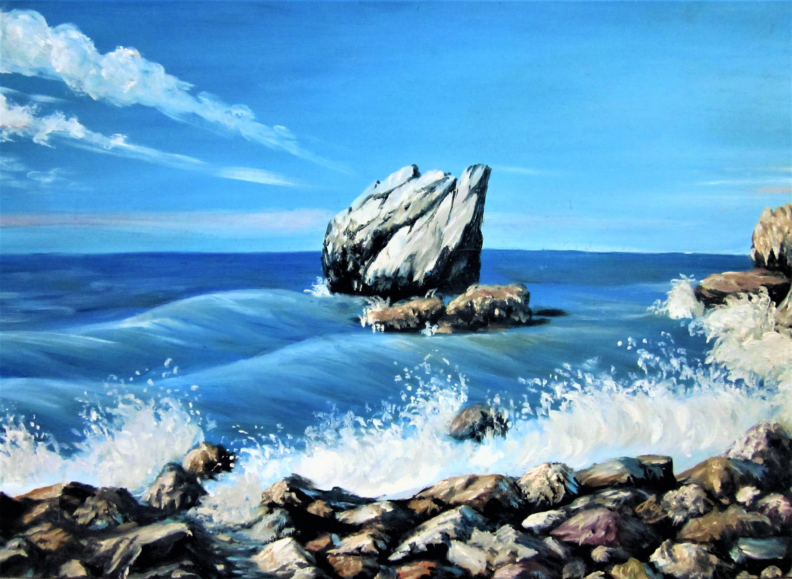
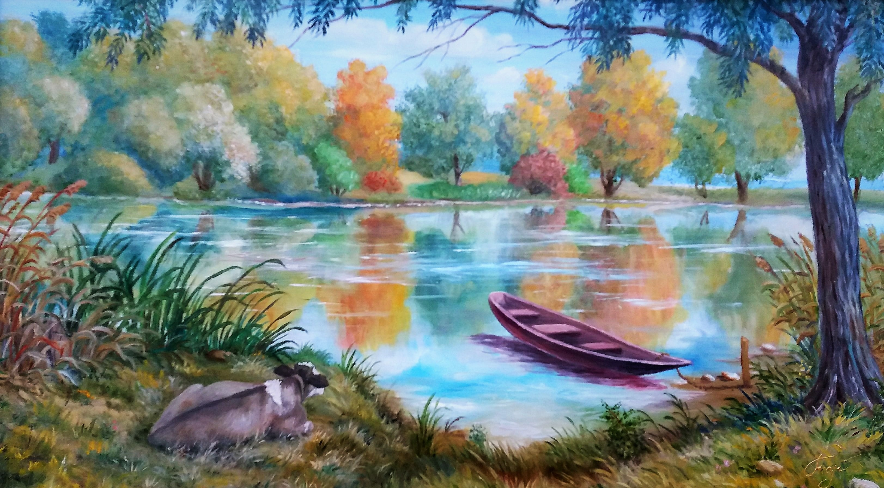

Поезія
Вишневий сад
Весна в Україні – розквітли сади{kind=link}
Разом із ними розквітнеш і ти.
Вишня вдягнула весільний наряд
Ось і джмелі-парубки вже летять.
Весілля гуляють – гуде весь садок,
Повен садок духмяних квіток.
З розуму зводить, п’янить всіх підряд
Яблунь і груш запашний аромат.
Злетілися гості з прилеглих лісів,
Дехто прилинув із теплих країв.
Хмільний соловейко пісню завів.
Лунає ця пісня дзвінка, гомінка
І кличе закоханих всіх до садка.
04.2012

У луках
Ти у луки мене поведи,Де літають веселі стрикізки,
Щоб у травах біля води
Вітерець розчесав мої кіски.
Щоб я чула лише шелест трав,
Ще пташок, що летять над водою,
Щоб ніхто мені не заважав
Насолоджуватися тобою.
02.2017
Дві сосни
 Дві сосни – дві сестри, та у них різні долі.
Дві сосни – дві сестри, та у них різні долі.Одна діждалась весни, ну а інша – вже долі.
Вони разом зросли, весни в двох зустрічали.
І в жару, і в морози завжди поруч стояли.
Їм здавалось завжди, що так буде повік.
Та за мить вітровій вкоротив одній вік.
За нею тужить сестра: «Їй би жити і жити».
Та на жаль так бува – сестру не воскресити.
Тож часу не марнуй, а ціни кожну мить.
І вчасно цінуй тих хто поруч стоїть.

Байкал
Такое, посреди окрестных скал,
Я представляю озеро Байкал.
Оно бушует, бьет волной о камни,
И вообще крутой имеет нрав.
Или спокойно и не разбрызгивает капли
Трудно представить, там не побывав.
12.2012
{kind=link}
Байкал
Такое, посреди окрестных скал,Я представляю озеро Байкал.
Оно бушует, бьет волной о камни,
И вообще крутой имеет нрав.
Или спокойно и не разбрызгивает капли
Трудно представить, там не побывав.
12.2012
Река времени
Несет нас времени река,И голубые облака,
 Быть может, вспомнят обо мне,
Быть может, вспомнят обо мне,Летя в небесной синеве.
А что нас помнить?
Кто мы есть?
Какой мы след оставим здесь?
Чтоб быть известным на века
Нужно быть славным. А пока…
Дерзай, стремись, твори, пиши.
Восьмое чудо света соверши.
И пусть запомнят облака
Твоё простое имя навсегда.
12.2012
Про що замислилось теля?
Про що замислилось теля?Воно ж багато що не знає,
Книжечок бо не читає.
 Про що ж замислилось теля?
{kind=link}
І телевізора не має,
І про війну воно не знає.
Про що замислилось теля?
Воно й годинника не має,
А час за сонцем визначає.
Спостерігає це теля,
Як човник хвилями гойдає,
Як птах над річкою літає.
Спостерігає це теля,
Що сонечко вже менше гріє,
Як листячко уже жовтіє.
А чи щасливе це теля?
Лежить в травичці, над водою,
Воно в гармонії з собою,
Тому щасливе це теля!
2018
ЛЕБЕДІ КОХАННЯ
Серед мережива гілок та сніжних кучугур,Де води сонця відбивають промені барвисті,
Ми бачимо серця із двох фігур,
Вони голодні, змерзлі та душею чисті!
{kind=link}
Серед зимових лютих холодів
Лише кохання їх і зігріває.
І не даремно ми ще чули від дідів
Про те, яка любов у лебедів буває.
Ось так і тут: вона летіти не могла,
Коли у теплий край їх ключ полинув,
І він відмовився від зелені, тепла
Та у біді кохану не покинув!
Хто ж зна, якою видасться зима,
Чи теплою, чи пролунає пісня їх остання.
Та називають люди не дарма
Цих дивних птахів – лебеді кохання.
2018
ОЗЕРА
В нашій місцині озера чарівні!
Лататтям уквітчані та неймовірні.
Під небом блакитним чудові малюнки -
Природа створила свої візерунки.
Милуюсь цією красою і я.
Яка ж тільки гарна рідна земля!
2012